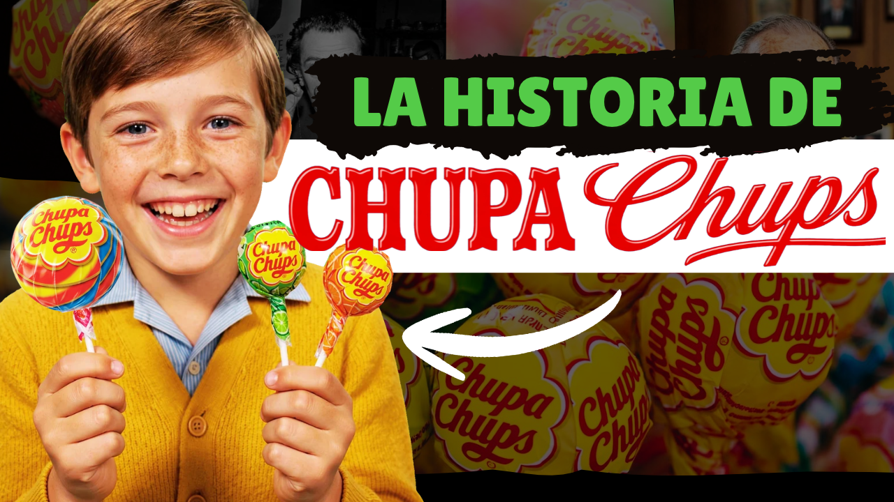
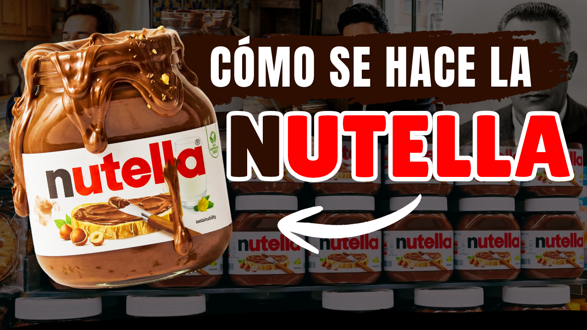
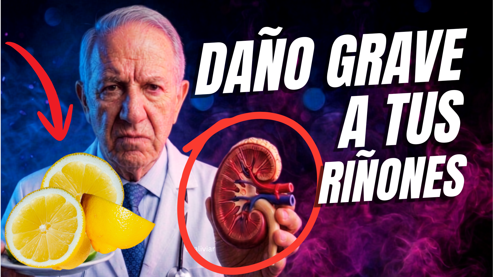

01 / INVESTIGACIÓN
Contenido premium y evergreen
Estudio temas con interés de búsqueda, relevancia duradera y oportunidades de baja o moderada competencia, según la información disponible.
Investigo oportunidades de contenido premium para YouTube, Facebook y TikTok. Analizo palabras clave evergreen, competencia y potencial de búsqueda; después preparo guiones, títulos y elementos SEO listos para que tú produzcas tus videos.
Te ayudo a elegir temas con criterio, preparar mensajes que conecten y organizar los elementos que acompañan cada publicación.
Estudio temas con interés de búsqueda, relevancia duradera y oportunidades de baja o moderada competencia, según la información disponible.
Reviso búsquedas, videos relacionados y canales del nicho para evaluar si una idea merece desarrollarse.
Creo guiones con un inicio atractivo, desarrollo organizado, transiciones y llamados a la acción naturales.
Propongo títulos, descripciones optimizadas, etiquetas, hashtags y palabras clave relacionadas con el tema.
Entrego ideas de miniatura, frases breves y recomendaciones de enfoque visual para apoyar el título del video.
Te acompaño en la revisión del SEO de tu canal de YouTube, identificando oportunidades para mejorar títulos, descripciones, palabras clave y la organización estratégica de tus publicaciones.
Si tu canal ya está monetizado, te oriento sobre buenas prácticas para revisar la ubicación de anuncios, incluidos los cortes publicitarios durante videos elegibles, buscando equilibrar la experiencia del espectador y las oportunidades de ingresos.
Te comparto recomendaciones para enlazar un video con otro mediante pantallas finales, tarjetas, listas de reproducción y llamados a la acción; también consejos sobre retención, organización del canal y análisis de resultados en YouTube Studio.
Organizo entregas por proyecto, semana o mes, según tu nicho, audiencia y frecuencia de publicación.
Identifico tu audiencia, objetivos y estilo de comunicación.
Busco temas evergreen, palabras clave y señales de demanda.
Analizo competencia, relevancia y viabilidad del contenido.
Preparo el guion y las recomendaciones de título, SEO y miniatura.
Invierto en herramientas especializadas y recursos de análisis para investigar cada propuesta con mayor profundidad. Combino sus datos con una revisión directa de YouTube para seleccionar temas y preparar contenido de alto valor, relevante para tu audiencia y respaldado por criterios estratégicos.
Los alcances y la cantidad de entregas se definen en una propuesta individual. No hay precios inventados ni servicios que no necesitas.
Paquetes de contenido personalizados: disponibles en opciones de 8, 10, 15 y hasta 25 contenidos. Los servicios pueden modificarse, ajustarse o ampliarse de acuerdo con las necesidades, objetivos y cantidad de contenidos de cada cliente.
Modificable según la cantidad de contenidos y los servicios solicitados.
Consultar paqueteUna solución integral para quienes desean delegar todo el proceso de creación de contenido, desde la idea inicial hasta recibir el video listo para publicarse.
Soy Juan José Tumax, creador de contenido digital y emprendedor apasionado por el crecimiento personal y profesional. Cuento con más de tres años de experiencia en el mundo digital, durante los cuales he dedicado mi tiempo a aprender, investigar y desarrollar proyectos para diferentes plataformas, especialmente YouTube.
Me considero una persona responsable, comprometida, perseverante y exigente con la calidad de mi trabajo. Creo firmemente que el éxito no llega por casualidad, sino que se construye con disciplina, preparación y mejora constante.
Mi pasión por lo que hago me impulsa a perfeccionar cada detalle, desde la investigación de una idea hasta la planificación de una estrategia de contenido. No me conformo con hacer las cosas bien; siempre busco cómo hacerlas mejor.
Hoy, mi propósito es poner mis conocimientos, herramientas y experiencia al servicio de otros creadores y emprendedores, ayudándolos a desarrollar sus proyectos digitales con estrategias profesionales, contenido de alto valor y una visión enfocada en el crecimiento.
Mi filosofía de trabajo es sencilla: cada proyecto merece dedicación, cada detalle importa y cada cliente merece un servicio de calidad.
Además de trabajar con quienes desean iniciar un canal desde cero, también puedo ayudarte si ya tienes uno en funcionamiento. Analizo su contenido, títulos, miniaturas, palabras clave y estadísticas para identificar oportunidades de mejora y fortalecer tu estrategia SEO.
Te invito a conocer uno de mis canales de YouTube para apreciar directamente mis videos, títulos, miniaturas, guiones y estilo de edición.
Conoce ejemplos reales de mi trabajo y observa cómo se presentan los temas, títulos, miniaturas, guiones y la edición de los videos publicados.
Visita la sección de videos de mi canal para explorar mi contenido y evaluar mi estilo de trabajo.
Ver mis videos en YouTube ↗El enlace abre directamente la sección de videos de mi canal en YouTube.
Este es uno de los videos de mi canal que, según mi experiencia, continúa recibiendo reproducciones y generando ingresos a través de la monetización de YouTube y Google AdSense.
Te comparto este ejemplo para que conozcas cómo aplico la investigación de temas, la estructura narrativa, la selección de títulos y la preparación de contenido en mis propios proyectos.
El video forma parte de mi experiencia como creador digital y muestra el tipo de trabajo estratégico que puedo aportar a tu canal.
Ver video en YouTube ↗Conoce de cerca cómo preparo mis proyectos: investigación de temas, estructura narrativa, guiones y recomendaciones para presentar cada video. Aquí puedes revisar dos ejemplos de documentos PDF y algunas de las miniaturas de YouTube que he trabajado.
Este PDF muestra la base fundamental de mi proceso de investigación profesional: análisis de palabras clave y competencia, propuestas de título, estructura por capítulos, narrativa y verificación de fuentes. Combino herramientas profesionales de pago con una revisión cuidadosa de la información para desarrollar cada contenido con profundidad, criterio y calidad. Es una muestra del profesionalismo y la dedicación que aplico en cada proyecto.
Ejemplo de guion documental con introducción atractiva, desarrollo por capítulos, cierre narrativo y propuestas de descripción, hashtags y etiquetas.
Estas cuatro miniaturas son ejemplos visuales de mi trabajo. Cada una utiliza una composición, un mensaje y una jerarquía visual pensados para captar la atención del espectador.



Las muestras ilustran formatos de trabajo y ejemplos creativos. El contenido y las entregas se adaptan a las necesidades de cada proyecto.
Cuéntame sobre tu canal, tu nicho y cuántos contenidos necesitas. Prepararé una propuesta adaptada a tus objetivos y presupuesto.
Solicitar información por correo electrónicoContacto: emprendedorestmx@gmail.com · Se abrirá Gmail para redactar tu consulta.